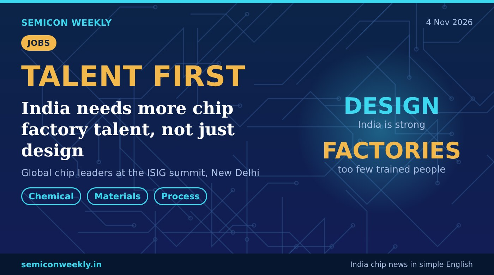

Chip leaders say India needs more factory talent, not just design
Talent decides where chip companies invest, and India has too few people trained for chip factories.

In short
- At the ISIG summit in New Delhi, global chip leaders said talent decides where chip companies invest.
- ISIG's CEO Salah Nasri said India is strong in chip design but has too few people for chip manufacturing.
- ISIG India head Santosh Kumar asked students to also look at chemical and materials engineering for chip jobs.
Key numbers
DesignIndia is strong
FactoriesToo few trained people
₹6,200 crParas Semiconductors' planned plant in MP
What happened
- The International Semiconductor Industry Group (ISIG) held its executive summit in New Delhi.
- Its CEO Salah Nasri said talent is the main reason chip companies choose a country to invest in.
- He said India has strong chip design talent but too few people trained for chip factories.
- ISIG India head Santosh Kumar asked students to look at core subjects like chemical engineering and materials science. His company, Paras Semiconductors, plans a ₹6,200 crore chip plant in Madhya Pradesh.
Why it matters
Why this is useful
- A chip factory needs process, equipment, materials and quality engineers, not only designers.
- These roles are hard to fill, so trained people are valuable.
Why it is good for freshers
- New fabs and packaging plants need process, materials and equipment engineers, so freshers with these skills may face less competition than in design.
- ECE students can learn device physics, process steps and yield basics.
- Chemical, materials and mechanical students have a real path into chip companies too.
Why it is good for India
- Training factory talent at home makes India more attractive for new chip plants.
- Jobs spread across many branches of engineering, not just ECE and CS.
Words in this story
- ISIG: International Semiconductor Industry Group, a global chip industry body.
- Chip manufacturing: making chips in a fab: printing, etching and layering circuits on wafers.
- Materials science: the study of materials like silicon, metals and chemicals used to build chips.